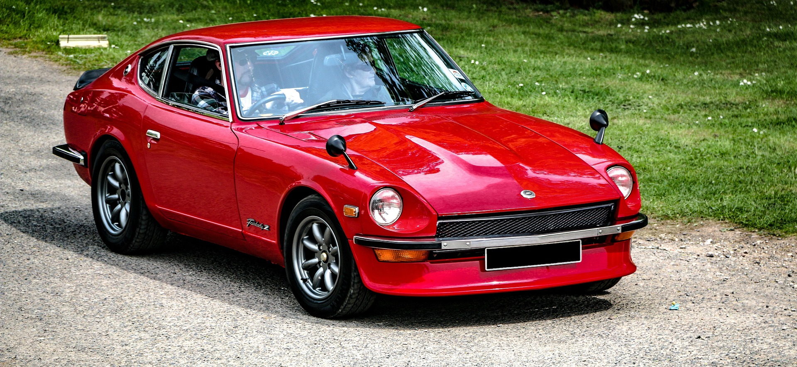

My Fairlady 280Z project represents my passion for mechanics, problem solving, and restoration work.
I am currently pursuing a bachelor's degree in Information and Communication Technology at New Mexico State University. My goal is to build strong networking and technical skills.


| Category | Car Project | ICT Career |
|---|---|---|
| Skills | Mechanical troubleshooting | Networking and coding |
| Goal | Restore vehicle | Build technology career |
| Learning Style | Hands-on learning | Technical training |
Learn HTML here: MDN HTML Guide